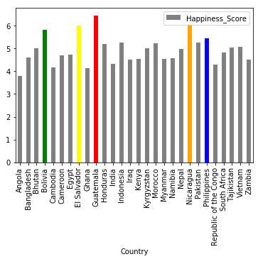
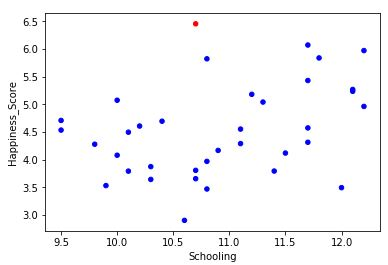
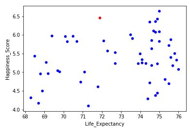
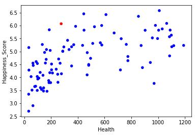
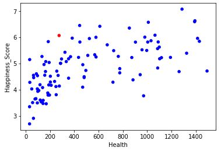
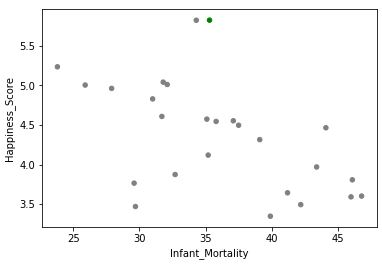
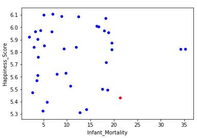

Country Happiness Report¶
Why are people in certain countries happier than others?¶
Abstract¶
- When quantifying the happiness of particular countries, a scale called the Cantril ladder is used. When using this ladder, surveyors ask respondents to rate their country on a scale from zero to ten. Zero is the least happy while ten is the happiest (worldhappiness). From the survey responses, they are averaged to find the country’s overall happiness score. The data used in this project is country data compiled by the United States government in 2010 posted on the CIA World Factbook. The data includes twenty-five variables for each country: happiness score, state of development, average elevation in meters, average rainfall in millimeters, average temperatures in degrees Celsius, expected number of years schooling per person, average body mass index per person, money per capita spent on health adjusted of purchasing power parity in U.S. dollars, alcohol consumption in liters per capita.
- 
Significant Variables¶
When testing for a correlation to a country’s happiness score, seven of the twenty-four variables were found to be significant: development, schooling, health, life expectancy, phone, infant mortality, and gross domestic product (GDP) per capita. Development quantifies the current state of development in a particular country by giving it a number one through four with one being considered “very high development” and four being considered “very low development”. Schooling refers to the expected number of years a person spends on average in school. Health is measured by money spent per capita per year on health adjusted for purchasing power parity in U.S. dollars. Life expectancy is the average length of a person’s life. Phone is measured by the number of phones per one thousand people. Infant mortality displays the amount of deaths by infants per one thousand people. Lastly, GDP stands for gross domestic product per capita.
The Guatemala Case¶
- Of all countries that are outliers, Guatemala is the most extreme. Its happiness score of 6.454 puts it in the top tier of happy countries. However, the seven variables correlated with happiness tell a different story. When compared to countries with a similar happiness rating, meaning they were within half a standard deviation above or below Guatemala, Guatemala is far less developed, has fewer years of schooling, spends less than a sixth of the amount of money other countries spend on health, has a life expectancy of roughly 5.5 years fewer, has less than half of the amount of phones per one thousand people, possesses an infant mortality rate of more than 2.5 times the other countries’ average, and has less than a fourth of the average GDP per capita. Guatemala was also tied for last in development level and last in years schooling and infant mortality with countries of similar happiness.
-  
The Nicaragua Case¶
- Nicaragua is another country categorized as having low development, but has a happiness score comparable to countries of very high development. Nicaragua lacks profoundly in money spent on health, number of phones per one thousand people, and GDP per capita when compared to countries of similar happiness. These countries spend an average of $1760 on health per capita per year, while Nicaragua spends $275. Nicaragua also has less than a third of the number of phones per one thousand people and less than a fifth of the average GDP per capita. The country also is below average in terms of years schooling, life expectancy, and infant mortality. Despite these facts, Nicaragua remains happier than highly developed nations, such as Japan and South Korea.
- 
The El Salvador Case¶
- El Salvador falls just outside of the top tier of happiness, but is near the top of the second highest tier, so it is still considered a happy country. Overall, it is the forty-fourth happiest country in the world, but its development is considered “low”. As compared to Guatemala and Nicaragua, El Salvador is not as far off from countries of similar happiness in its metrics. However, it is still far enough away to be considered an outlier in terms of happiness. The country’s average years of schooling is 13.2 which is more than a year less than average. It spends less than a third of the average on health, has a life expectancy that is low by about 2.5 years, a number of phones that is just over half of the average, an infant mortality rate about 50% too high, and a GDP per capita that is less than half of the average. Regardless of this, El Salvador ranks ahead of many highly developed countries.
- 
The Bolivia Case¶
- The next outlier, Bolivia, is below the average of similar countries in every significant variable. Average expected years of schooling is only 0.4 below average, and life expectancy is only 4.2 years below average. However, the other variables are not even close to the average amount. The country spends less than a third of the amount of money on health as the similar countries do on average, has less than half of the number of phones per one thousand people, has an infant mortality of almost triple the average, and has roughly a fourth of the GDP per capita. Bolivia still ranks ahead of many of the wealthier and more developed countries of eastern Europe.
- 
The Philippines Case¶
- The last, and most unique country that appears happier than it should be is the Philippines. Of the five outliers, the Philippines is the least happy as it is just barely above the 50th percentile. The Philippines is also the only outlier to not be located in Central or South America or speak Spanish. When compared to countries of similar happiness, the Philippines has two less years of expected average schooling, spends slightly more than a fourth on health, has a life expectancy 5.2 years below average, a lower number of phones per one thousand people, an above average infant mortality rate, and a GDP $3200 below average. Even though the Philippines is significantly less happy than the other outliers, it has a happiness rating higher than Hungary, Croatia, Greece, and Portugal, very highly developed European countries.
- 
Top 5 Countries¶
The top five happiest countries in the world are Norway, Denmark, Iceland, Switzerland, and Finland. Unsurprisingly, these countries are well above average in every significant variable. They all are expected to go to school at least three years longer than average, spend at least 2.5 times more on health, have a life expectancy of nine years or longer, double the number of phones, an infant mortality rate close to zero, and GDPs per capita roughly triple the average or more. The variable that stands out the most is infant mortality. The mean for all the countries is 23.8 deaths per one thousand births while the median is fifteen deaths. Of the top five happiest countries, Denmark has the highest infant mortality rate at four deaths per one thousand births. GDP per capita has a large influence as well. When analyzing the data as a whole, six countries have outlying GDP per capita that is too high. Finland is the only top five country without an outlying GDP per capita, yet it is still well above average in terms of happiness.
Bottom 5 Countries¶
The bottom five happiest countries in the world are Rwanda, Syria, Tanzania, Burundi, and the Central African Republic. These countries fall extremely below average in every category. The only exception is Syria has a better than average infant mortality rate. All of these countries go to school roughly 2.5 years less than average or shorter, spend a miniscule amount on health per person, have life expectancies at least 5.5 years shorter than average, a small number of phones, high infant mortality rates, and GDPs per capita that are one third of the average or less. The area in which these countries fall the shortest is money spent on health. Of these five countries, Syria spends the most on health, but only spends $169 per person, roughly one ninth of the average. Tanzania and the Central African Republic each spend $32 per person, which is less than a 47th of the average. There are not as many outliers in the bottom five as compared to the top five, however, these countries rank consistently near the bottom in most categories.